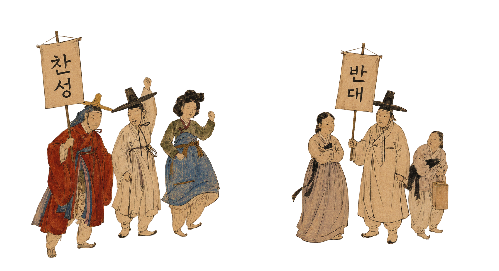

"딸아이에게 아름다운 이름을 지어주고 싶었을 뿐입니다..."
2023년, 한 아버지가 딸의 이름에 '예쁠 래' 라는 한자를 넣어 출생신고를 하려다 거부를 당했습니다. 이 한자가 인명용 한자 목록에 없었기 때문입니다. 주민센터는 한자 '래' 대신 한글 '래'로만 이름을 기록했습니다.
아버지 김씨는 이에 불복해 헌법재판소에 헌법소원을 제기했습니다 국가가 법으로 한자 목록을 제한해 그 자유를 침해하고 있다는 주장이었습니다
"딸아이에게 아름다운 이름을 지어주고 싶었을 뿐입니다..."
2023년, 한 아버지가 딸의 이름에 '예쁠 래' 라는 한자를 넣어 출생신고를 하려다 거부를 당했습니다. 이 한자가 인명용 한자 목록에 없었기 때문입니다. 주민센터는 한자 '래' 대신 한글 '래'로만 이름을 기록했습니다.
아버지 김씨는 이에 불복해 헌법재판소에 헌법소원을 제기했습니다 국가가 법으로 한자 목록을 제한해 그 자유를 침해하고 있다는 주장이었습니다
이름은 사회 구성원이 읽을 수 있어야 함
한자 수가 방대해 범위 설정 필요하며,
9,389자는 충분히 많다
추후 개명 등 구제 수단 존재한다
이름은 정체성 표현, 국가 개입 신중해야하며,
전산화 이유는 현재 기술로 해소 가능하다
선정 기준이 불명확해 자의적 제한이다.
개명 강요는 불필요한 절차 부담된다

행정 편의보다 개인의 자유가 먼저입니다
1991년 컴퓨터 시스템의 한계로 시작된 인명용 한자 제한은 기술이 비약적으로 발전한 지금도 관성적으로 유지되고 있습니다.
헌재 재판관 9인 중 4인이 위헌이라고 했고, 대법원 스스로도 9차례나 목록을 확대해왔습니다.
이는 제한의 근거가 처음부터 완전하지 않았다는 방증입니다.
이름을 짓는 자유는 행복추구권의 핵심입니다. 인명용 한자 제한은 폐지하거나, 최소한 '자형과 음가가 확인되는 모든 한자'로 전면 확대해야 합니다.
저는 위헌이라고 생각합니다 여러분은 어떻게 생각하세요 위헌? 합헌?
설명 내용이 들어갑니다.